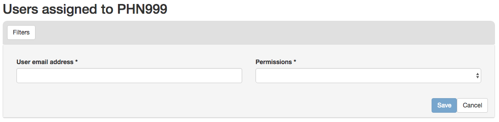
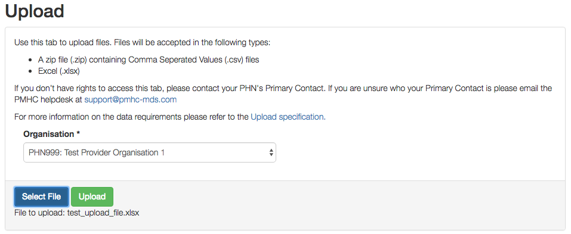

User Documentation¶
Frequently Asked Questions¶
Accessing the PMHC Minimum Data Set¶
How do I obtain access to the PMHC MDS?¶
Access to the PMHC MDS is based around roles. Each role allows a user to perform specific tasks. A user can have more than one role. Each role is granted for a user against an organisation. An organisation can either be a Primary Health Network or a Provider Organisation. If a user is granted a role for a Primary Health Network (PHN) they will also have this role for any Provider Organisation’s of that PHN. The following table provides a summary of each of the roles that currently exist within the PMHC MDS:
| Role | Tasks allowed |
|---|---|
| User Management | A user with the User Management role for an organisation can manage provider organisations and user accounts for that organisation |
| Upload | A user with the Upload role can upload data to the associated organisation |
User accounts can be created by a user at your Provider Organisation or PHN who has the User Management role. Please contact support@pmhc-mds.com to find out who has this access.
Alternatively, if you cannot contact any users who have the User Management role access can be gained by producing a Letter of Authority.
Letter of Authority¶
The protocol for setting up a new account to access the MDS requires a written letter of authority. A letter of authority is a request made on your Primary Health Network or Provider Organisation’s letterhead which must be signed by an authority at the Primary Health Network or Provider Organisation who holds a position that is higher than the person for whom the account is being created (i.e., the person’s manager or the CEO).
This letter must contain the following details (for the person for whom the MDS access is being requested):
- Name.
- Email address.
- Contact telephone number.
- Mobile phone number.
- The exact Primary Health Network or Provider Organisation’s name in the MDS you are seeking to access.
- The roles (User Management, Upload) required for the user. The user can have both of these roles.
This letter must be faxed or scanned then emailed to:
Strategic Data Fax: (03) 9340 9090 or Email: support@pmhc-mds.com
The same protocol applies if an MDS user no longer requires MDS access and needs to hand over their MDS access to another person. However, in this case it is advised that the new MDS user has a new username and password issued to protect the privacy and security of the organisation’s data.
This process will also apply where a user is requesting a password re-set. However, the auto Password or username recovery process available to you via the MDS login screen is the preferred method of password retrieval.
If your email address has changed, it is important that you update your account or notify a user with the User Management role or the PMHC helpdesk so that your records can be updated. When contacting the PMHC helpdesk you will be asked to arrange for a Letter of Authority stating the change(s) and this must then be sent to Strategic Data via fax or scan/email as documented above.
Password or username recovery¶
The system offers an automated password/username recovery feature. The system will email the registered email address on your account and send an SMS to the registered mobile phone on your account. See Forgotten or Expired Password for instructions on resetting your password.
It is important to keep your email address and mobile phone current so that you can make use of this facility. If you can no longer access the PMHC MDS please email the PMHC MDS helpdesk at support@pmhc-mds.com to update your email address/mobile phone. Please note that a Letter of Authority will need to be produced in order for the PMHC MDS helpdesk to update your account.
I forgot my password. What do I do?¶
How do I get started using the MDS?¶
Please refer to How do I obtain access to the PMHC MDS? for information on getting an account on the MDS.
The MDS website is available at https://pmhc-mds.com/. Here you will find documentation on using the MDS.
The MDS is accessed on the web at the following address: https://pmhc-mds.net/
Can I pass on my username and password to my organisation’s IT person or evaluator if they are entering data?¶
No, each user should be issued with their own username and password. Please refer to How do I obtain access to the PMHC MDS? for information on how to get an account.
Can GPs or Mental Health Providers (MHPs) access the MDS to upload data themselves?¶
Yes, GPs and MHPs can access the MDS to upload their data directly into the system. However, it is not possible to limit their data access to the select data fields that they would normally manage. For example, MHPs would normally only need to enter or edit their own client information and the episodes and service contacts associated with these clients.
However, it is not possible to restrict their access only to their own clients’ data. They will be able to modify data for clients across their entire provider organisation. Therefore, MHPs who access the MDS could potentially change data for a client that is not their own.
I’m a third-party software developer developing software to assist with uploading data to the MDS. Can I have an account to test my data uploads?¶
Yes, we can supply you with an account that has access to a test Primary Health Network.
In order to set up the test Primary Health Network account we need to follow a similar procedure to setting up a proper Primary Health Network account. To do that we require a Letter of Authority as detailed in the Letter of Authority section above.
Could you please provide a similar letter on your company’s letterhead containing the following details:
- The name of the person the account is for
- The email address of the person
- Contact telephone number
- Mobile phone number
- Request access to the ‘Test [Your Company Name]’ Organisation
This letter must be faxed or scanned then emailed to:
Strategic Data Fax: (03) 9340 9090 or Email: support@pmhc-mds.com
Entering data in the PMHC Minimum Data Set¶
How often should I enter data into the MDS?¶
Please refer to Reporting timeliness.
What do I do If the GP / mental health provider has not given an answer to one or more questions in the minimum dataset?¶
Provider Organisations should make every effort to ensure that the data entered into the MDS is as complete as possible. However, most data items specify a ‘Missing’ response. Where information is unavailable, please use this response item. The aim is to minimise missing data as much as possible.
Can I go back and enter information if I don’t have it at the time?¶
Yes, the MDS allows you to go back and enter information at a later date.
Uploading data¶
How do I obtain a template to upload my data to the MDS?¶
Upload templates are available from Upload specification.
What do I do if I have collected the data in Excel or Access?¶
See the online MDS documentation regarding uploads.
A detailed document for data uploads is available on our website, see Upload specification.
Capturing additional data¶
It seems that the data being collected is quite limited, would it not be useful to collect more detailed information?¶
The development of the minimum dataset balanced the ideal against what was realistic, given that any additional data item places extra burden on those collecting and entering data.
Organisations may collect extra information for their own analysis however this information does not need to be submitted to the PMHC MDS.
What are the options where the information collected does not fit into the available fields?¶
Each data item has associated notes that provide guidance on which response to use. Please refer to the data item documentation at Record formats.
Checking data¶
Each individual organisation is responsible for checking their data in the MDS to confirm its accuracy and completion. It is advisable that this review is undertaken regularly to ensure data integrity and avoid widespread errors.
Alternatively, for greater precision and to access your data in full, you can download your data.
Storing data relating to the minimum dataset system¶
After entering data in the MDS how long should I store my hardcopy and/or electronic files?¶
There is no set time limit; however, it is recommend that you archive this data and keep it secure for at least two years. As with all electronic data (including MDS) there is a risk of corruption - whether it is due to a system bug or human error. The MDS stores the original upload files as well as the data that has been imported into the database, however it is always good to keep the original data as a backup to either check details against or re-enter, if needed.
PMHC mailing list¶
How can I be advised of any changes to the MDS?¶
When changes are made to the MDS we alert all users via an email list. MDS users are automatically added to this list, however sometimes other Primary Health Network or Provider Organisation staff who do not have accounts wish to be informed of updates. If you would like to be added to the mailing list please email support@pmhc-mds.com.
I have an MDS account but don’t receive update emails.¶
Please check that we have your correct email address.
Mailing list emails will be sent from support@pmhc-mds.com. Please make sure this is not being caught in any spam filters.
I no longer wish to receive PMHC update emails. How can I be removed from the list?¶
Please email support@pmhc-mds.com and ask to be removed from the mailing list.
I am a third-party software developer developing code to assist with uploading data to the MDS. Can I be informed of updates to the MDS?¶
Yes, we have a mailing list specifically for third-party developers. Please email support@pmhc-mds.com and ask to be added to the developers mailing list. Please provide us with a generic address that will survive staffing changes.
Who to contact¶
A dedicated Help Desk is available to support Primary Health Networks and Provider Organisations implementing PMHC in relation to the minimum dataset system. All enquiries should be directed to: support@pmhc-mds.com.
User Guide¶
Passwords¶
Passwords are to be:
- 13 or more characters with no complexity requirements, or
- a minimum of 9 characters with at least 3 of the following character sets
- lowercase characters (a-z)
- uppercase characters (A-Z)
- digits (0-9)
- punctuation and special characters
- changed at least every 90 days
- changed by users no more than once a day
- not reused from any of the preceding eight changes
Users will be reminded via email when their password is due to expire. If a password expires the user will not be able to access the system until they reset their password - see Forgotten or Expired Password.
Home¶
To use the PMHC MDS navigate to https://pmhc-mds.net/
The first page you will see is the Home page. The home page shows you the most recent announcements made via the PMHC mailing list.

Logging In¶
After navigating to https://pmhc-mds.net/ click the ‘Sign in’ button to login.

You will be presented with a login form. Enter your email address or username and then your password and click ‘Sign in’.
Please note - the PMHC MDS will automatically log out users after 15 minutes of inactivity. You will see a pop up box that will provide a count down feature prior to automatically logging out the idle user.
If it is your first time logging in, you will be asked to set a backup email address.

The backup email address is used when resetting your password. If you forget your password an email is sent to both your primary email address and your backup email address. This allows you to regain access to your account in the event that you no longer have access to your primary email address.
Click ‘Set a backup email now.’
You will be shown the manage details page.

Under ‘Manage Security Credentials’ there will be an ‘Email address’ field.
Type in your backup email.
Click ‘Submit’

You now need to confirm the email address. You will have been sent an email to the address you specified and an SMS to the mobile phone number we have on record. Please follow the link in the email and enter the code that has been sent to your mobile.

Click ‘Submit’
Your backup email is now confirmed.

Navigate back to https://pmhc-mds.com/ and sign in.
What you see once you login will depend upon what roles you have been assigned. The table below lists the tabs that will be shown for each role:
Role Tab User Management Organisations Users Upload Upload All users SLK
Forgotten or Expired Password¶
Passwords have to be changed every 3 months. If you do not change your password it will expire and you will not be able to login to the system without resetting your password.
If you have forgotten your password or it has expired:
Navigate to https://pmhc-mds.net/ and click the ‘Sign in’ button.
Click ‘Forgot Password’.

You will be prompted to enter your email address or user name recorded for the PMHC MDS.
Click the ‘I’m not a robot’ checkbox.
Click ‘Submit’.
An email with further instructions will be sent to the email address the PMHC MDS has on file. Additionally, if you have set a backup email, then an email will also have been sent there. An SMS with a verification code will have been sent to the mobile phone number we have on record.

Follow the link in the email.
Enter the verification code you were SMS’ed.
Click ‘Submit’.
You will be shown a ‘Password reset’ page.

- Enter your new password.
- Confirm you new password.
- Click ‘Submit’.
- Your password will be reset.

- Navigate back to https://pmhc-mds.com/ and sign in.
Logging Out¶
Once logged in, logout by:
- Clicking on the button to the right of the menubar that says ‘Logged in as [Name]’.
- A drop down menu will appear.
- Click ‘Logout’.
We highly encourage users to logout once they have completed their tasks.
Updating your details¶
Once signed in, to edit your details:
Click on the button to the right of the menubar that says ‘Logged in as [Name]’.
A drop down menu will appear.
Click ‘Profile’.
You will be taken to the Profile Management system.
Login using your PMHC MDS email/username and password.
You will see the ‘Manage Details’ page.

To update your name, click the ‘Change personal details’ link.
To update your primary email address, click the ‘Change email address’ link.
To update your backup email address, click the ‘Change backup email address link.
To update your mobile phone number, click the ‘Change mobile phone number’ link.
The last section on the page ‘Password lifetime’, tells you when you last changed your password and when it will expire. Passwords have to be changed every 3 months.
Organisations¶
You will only be able to see the Organisations tab if you have been assigned the ‘User Management’ role.
If you believe you should have access to an organisation and it doesn’t appear in your list please contact someone in that provider organisation or the provider organisation’s PHN who has the ‘User Management’ role.
If you are unsure who has the ‘User Management’ role please email the PMHC helpdesk at support@pmhc-mds.com
After navigating to the organisation tab, you will be presented with a list of the organisations for which you have been assigned the ‘User Management’ role.
Searching for an Organisation¶
You can sort and filter the listed organisations through the organisation tab.
Sort the listed organisations by simply clicking on a column header. Alternately you can click on the arrow beside a column header for more sort options, as follows:
- Sort Ascending
- Sort Descending
- Remove Sort
- Hide Column
To filter the listed organisations:
- Click the grey ‘Filters’ button.
- Start typing in an edit box now displayed under the column headers.
- To remove the filter, click the grey cross within the edit box beside any entered text.
Viewing an Organisation¶
You can view an organisation’s details through the organisation tab, by following these steps:
- Navigate to the Organisations tab.
- Click on the organisation name in blue text displayed within the table list.
The organisations details will be displayed, including a table listing the users that belong to this organisation.

Editing an Organisation¶
You can edit an organisation’s details through the organisation tab, by following these steps:
Navigate to the Organisation tab.
Click on the organisation name in blue text displayed within the table list.
If you have permission to edit the organisation a blue ‘Edit’ button will be displayed.
Click the blue ‘Edit’ button.

- Update the organisations details. Mandatory fields are marked with an *
- Click the blue ‘Save’ button.
Adding an Organisation¶
You can add an organisation through the organisation tab by following these steps:
Navigate to the Organisations tab.
Click the blue ‘Add’ button.

Complete all the mandatory fields marked with an * in the ‘Add New Organisation’ form. You may assign an existing user as Contact for this organisation. If an existing user will not be responsible for this organisation, come back and fill this item in once the user has been added.
Click the blue ‘Save’ button.
You will receive confirmation that the organisation has been saved, and it will now be displaying in your organisations list.

Deleting an Organisation¶
You cannot delete an Organisation. If you believe an organisation should be deleted please email support@pmhc-mds.com.
Viewing Organisational Users¶
You can view users assigned to an organisation through the organisation tab, by following these steps:
- Navigate to the Organisations tab.
- Click on the organisation name in blue displayed within the table list.
- Under the organisational details, you can view a table list of the organisation’s users. You can filter the users within this table list, click the grey ‘Filters’ button and start typing in an edit box now displayed under the column headers. To remove the filter, click the grey cross within the edit box beside any entered text.

Assigning Extra Roles to an Organisational User¶
You can assign extra roles to an existing organisational user by following these steps:
Navigate to the Organisation’s tab.
Click on the organisation name in blue displayed within the table list.
Click the blue ‘Add’ button under the Users assigned to the organisation.

4. Enter the users email address. 6. Check to ensure you have selected the correct user by reviewing the users details now displayed. 7. Select a role. 8. Click the blue ‘Save’ button
You will receive confirmation that the user has been saved to the organisations and they will now be displaying in the Users assigned to the organisation list.

Users¶
You will only be able to see the Users tab if you have been assigned the ‘User Management’ role.
If you don’t have access to the Users tab and you believe you should, please contact someone in your provider organisation or provider organisation’s PHN who has the ‘User Management’ role.
If you are unsure who has the ‘User Management’ role please email the PMHC helpdesk at support@pmhc-mds.com
After navigating to the Users tab, you will be presented with a list of the users that are assigned to the organisations for which you have the ‘User Management’ role.

Finding a user¶
You can sort and filter the listed users through the Users tab.
Sort the listed users by simply clicking on the column header. Alternately you can click on the arrow beside a column header for more sort options, as follows:
- Sort Ascending
- Sort Descending
- Remove Sort
- Hide Column
To filter the listed users:
- Click the grey ‘Filters’ button.
- Start typing in an edit box now displayed under the column headers.

- To remove the filter, click the grey cross within the edit box beside any entered text.
Viewing a User’s details¶
You can view a user’s details through the user tab, by following these steps:
- Navigate to the Users tab.
- Click on the user’s name in blue displayed within the table list.

A page will display showing the user’s details and the roles they have at particular organisations.
Adding a user¶
Note: PHNs can devolve user management authority to one or more users in a provider organisation so that the provider organisation can manage their own logins, or a PHN can choose to keep user management authority at the level of the PHN requiring each provider organisation to contact the PHN when they need a new user added.
The first step to adding a new user is to invite the potential user to the PMHC MDS. You can invite a new user through the Users tab, by following these steps:
Navigate to the Users tab.
Click the blue ‘Invite New User’ button.

Complete all the mandatory fields marked with an * in the ‘Invite User’ form. Only one role can be selected at this stage. User’s can be given multiple roles. If more than one role is required the extra roles will need to be added after the user has access to the system.

Click the blue ‘Invite’ button.
You will receive confirmation that the user has been sent an email to invite them to the PMHC MDS. They will also be sent an SMS containing a verification code. The user will need to follow the instructions in the email before they can gain access to the system. When the user has accepted the invitation you will be sent an email to let you know.
If the user requires more than one role you can now follow the instructions at Assigning Extra Roles to an Organisational User.
Accepting an invitation to become a PMHC MDS User¶
To become a PMHC MDS user you will be sent an invitation by email and a verification code via SMS. In order to gain access to the PMHC MDS you will need to accept this invitation as follows:
Click on the link contained in the email. You will be shown a page where you will need to input the SMS you have been sent.
Input your verification code.
Click ‘Submit’.
You will be shown a page where you need to choose a password.

Enter your password.
Confirm your password.
Click ‘Submit’.
Your account will now be activated.

Navigate to https://pmhc-mds.com/ and follow the Logging In instructions.
Upload¶
You will only be able to see the Upload tab if you have been assigned the ‘Upload’ role.
If you don’t have access to the Upload tab and you believe you should, please contact someone in your provider organisation or provider organisation’s PHN who has the ‘User Management’ role.
If you are unsure who has the ‘User Management’ role please email the PMHC helpdesk at support@pmhc-mds.com
After navigating to the Upload tab, you will be presented with a drop down list of the organisations to which you can upload.

Uploading a file¶
After navigating to the Upload tab, you will be able to upload data files to organisations for which you have the ‘Upload’ role.
You can upload data files through the upload tab, by following these steps:
Navigate to the ‘Upload’ tab.
If you are allowed to upload to more than one organisation you will be asked to enter an organisation name.
Select the name of the organisation whose data you are uploading from the drop down list.
Click the blue ‘Select File’ button.
Navigate to where the upload file is saved on your system. Select the file and click the grey ‘Open’ button.
Check to ensure you have selected the correct file by reviewing the file name now displayed below the ‘Select File’ button.
Click the green ‘Upload’ button.
You will receive confirmation that your file has been accepted. The file will now be validated and you will shortly receive an email informing you if your file was successfully uploaded to the PMHC MDS, or informing you of any errors that occurred. Please email support@pmhc-mds.com if you don’t receive an email within one hour.
SLK¶
We have provided a stand-alone generator that can be used without logging into the PMHC MDS. This allows users to generate Statistical Linkage Keys (SLK’s) to enter into upload files.
In order to generate an SLK:
- Navigate to the ‘SLK’ tab. This will open up the SLK generator.
- Enter the following client details: Given Name, Surname, Date of Birth and Gender.
- Click on the blue ‘Generate Key’ button.

The client’s ‘SLK Key’ and ‘Generated Hash’ key will now be displayed.
- Click ‘Copy to clipboard’ next to either of these items.
- Paste this information into your data file.
Please note: you can only copy one SLK at a time to the clipboard.